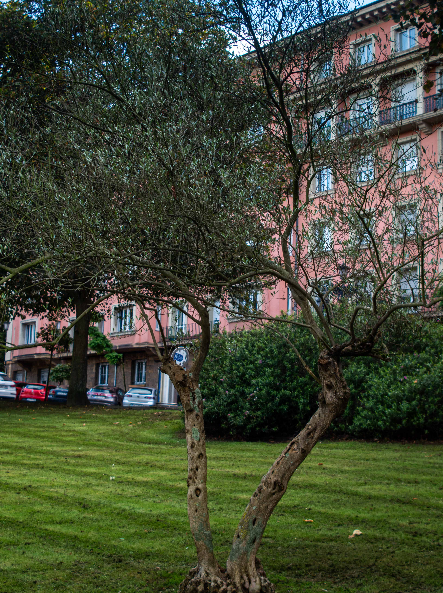

.jpg)
.jpg)
.jpg)
.jpg)
.jpg)
.jpg)
.jpg)
.jpg)
.jpg)
.jpg)
 Esculturas
Esculturas
Vídeo del parque que ofrece una vista panorámica de 360º desde el punto de grabación.
Vídeo del parque con vista en 360º
Conocido como "El Campillín"
.png) PARQUE DEL CAMPILLÍN
PARQUE DEL CAMPILLÍN
Tiene alrededor de 10.000 metros cuadrados, lo justo para que puedas desconectar un rato sin perderte.
Es como un pequeño pulmón verde en el centro de Oviedo. Perfecto para pasar una tarde tranquila, tiene espacios donde puedes sentarte a leer, charlar con amigos o simplemente disfrutar del aire fresco. Vamos, un lugar ideal para desconectar.
En él podrás encontrar Naturaleza | Deporte | Bienestar.
.jpg)
.png) Parque El Campillín
Parque El Campillín
Se encuentra en el casco histórico de Oviedo, en la Calle Arzobispo Guisasola. Este parque, anteriormente conocido como Campo de los Herreros, fue reconstruido tras la Guerra Civil y se ha convertido en un jardín popular.
.png) Su Conjunto
Su Conjunto
Alberga una variedad de árboles, arbustos y plantas que contribuyen a su atractivo paisaje. Entre los árboles, puedes encontrar plátanos, tilos, chopos, hayas, encinas, arces, magnolios y ginkgos, entre otros.
.jpg)
Aprendemos
.png) Ramón Pérez de Ayala
Ramón Pérez de Ayala
Nació en la parte alta del parque, cerca de la Calle Campomanes, y en 1980 se erigió un monolito en su honor con motivo del primer centenario de su nacimiento.
Su obra literaria es conocida por su estilo intelectual y simbólico, y abarca desde poesía hasta ensayos y novelas. Fué embajador de España en el Reino Unido durante la Segunda República.
Admiramos
.png) El árbol homenaje
El árbol homenaje
El árbol de olivo en el Parque del Campillín fue plantado como un símbolo de fraternidad y reencuentro entre Oviedo y el pueblo judío.
Este olivo representa la paz y la cooperación entre las comunidades, y es un recordatorio de la importancia de la convivencia y el respeto mutuo.
 Esculturas
Esculturas
.png) Otoño y su Colorido
Otoño y su Colorido.jpg)
.jpg)
.jpg)
.jpg)
.jpg)
.jpg)
Descubre el encanto otoñal del Parque del Campillín en Oviedo, donde sus árboles se tiñen de cálidos tonos dorados y cobrizos. Este acogedor espacio urbano invita a pasear por sus senderos y disfrutar de la calma que trae la estación. Un rincón ideal para conectar con la naturaleza en pleno corazón de la ciudad.
Explora las Otras Zonas Verdes de Oviedo

Descubre tu refugio natural en Oviedo, explora los diversos oasis y remansos de paz que la ciudad tiene para ofrecer.
Al igual que en los parques, en estas zonas verdes podrás encontrar Naturaleza | Deporte | Bienestar.
.jpg)
.png) Parque Campillín
Parque Campillín Esta vegetación diversa convierte al Campillín en un refugio verde en el corazón de la ciudad, proporcionando un espacio de tranquilidad y belleza natural para quienes lo visitan.
.png) Parque Infantil
Parque Infantil Ofrece juegos para niños que lo convierten en un lugar ideal para el esparcimiento familiar. Entre los juegos más populares se encuentran mesas de ping-pong, columpios, toboganes, etc.
.jpg)
Paseando por el parque
.png) PARQUE DEL CAMPILLÍN
PARQUE DEL CAMPILLÍN
Campillín es el lugar ideal para aquellos turistas aventureros que buscan salir de la rutina y vivir experiencias únicas en su viaje. Con su entorno natural privilegiado, sus actividades emocionantes y su encanto único, este barrio de Oviedo te espera para hacerte vivir una aventura que nunca olvidarás.
Homenaje a Ramón Pérez de Ayala
Escritor, novelista y poeta.
Un Entorno Natural
 Monumento en piedra
Monumento en piedra
Esta escultura datada en 1980 está hecha de piedra y bronce y es obra de José Antonio Nava Iglesias. Se trata de un homenaje de la ciudad de Oviedo al escritor y periodista ovetense Ramón Pérez de Ayala.
El monumento a Ramón Pérez de Ayala, ubicado en el paseo Antonio García Oliveros en la ciudad de Oviedo.
El rastro en el parque
PARQUE DEL CAMPILLÍN
El Parque del Campillín en Oviedo tiene una historia bastante interesante. Hasta el siglo XVIII, la zona se conocía como Campo de los Herreros porque allí se celebraba un mercadillo de objetos antiguos.
Cada domingo, el parque alberga un mercado dominical donde puedes encontrar todo tipo de artículos, desde ropa de segunda mano hasta productos artesanales.
Recorre y descubre
.png) Todo lo que puedes encontrar
Todo lo que puedes encontrar
Es pequeño pero encantador lugar lleno de verde. Perfecto para pasar una tarde tranquila, tiene espacios donde puedes sentarte a leer, charlar con amigos o simplemente disfrutar del aire fresco.
Este tipo de parque es donde te cruzas con gente paseando a sus perros.
También hay una zona de juegos para los niños y una cancha de baloncesto donde siempre hay alguien jugando.
Parque Campillín
Homenaje a Simón Bolivar

Parque Campillín
Km 0 de Oviedo
.jpg)
Parque Campillín
Para disfrutar con los peques
.jpg)
Parque Campillín
Mesas de ping-pong
Parque Campillín
60 Congreso peñas Barcelonistas
El Parque Campillín, situado en el corazón de Oviedo y próximo a la emblemática plaza del Fontán, es un lugar lleno de vida y tradición. Este parque no solo destaca por sus zonas verdes y áreas de descanso, sino también por ser el escenario del popular rastro de Oviedo, donde cada semana se reúne la comunidad en un ambiente de mercado al aire libre.
En nuestro video, te invitamos a descubrir el encanto del Parque Campillín y su vibrante actividad. A través de imágenes, mostramos cómo este parque es un punto de encuentro único que combina historia, naturaleza y cultura local. Desde pasear por sus caminos hasta explorar el rastro, el Parque Campillín ofrece una experiencia auténtica y especial, invitando a todos a disfrutar de su ambiente acogedor en el corazón de la ciudad.

Monumentos para Visitar
.png) Recorrido por el parque
Recorrido por el parque
En este parque encontramos.
Homenaje al Pueblo Judío.
Homenaje al centenario de Ramón Perez de Ayala.
Monumento a Campomanes.
Escultura de Simón Bolivar.
Escultura Peñas Barcelonistas.
Sobre Nosotros
Somos un equipo de desarrolladores web dedicados a crear experiencias únicas.
Nos
esforzamos por transformar la visita a los parques por excelencia de Oviedo en experiencias
digitales visualmente atractivas, intuitivas y fáciles de usar.
© Copyright 2025.
Todos los derechos reservados.